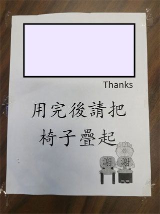
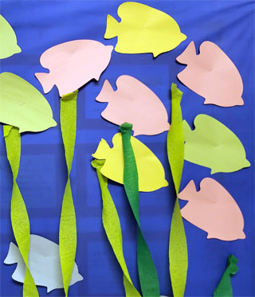
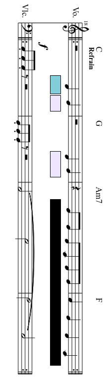
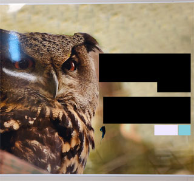
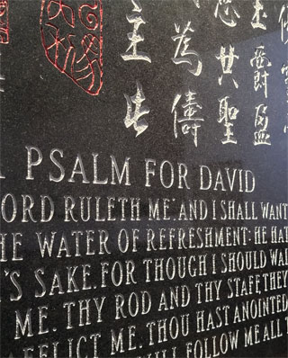
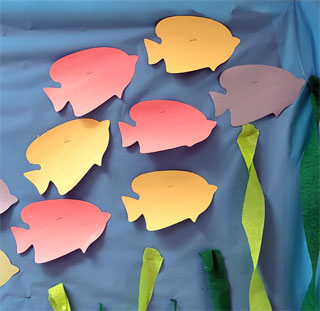
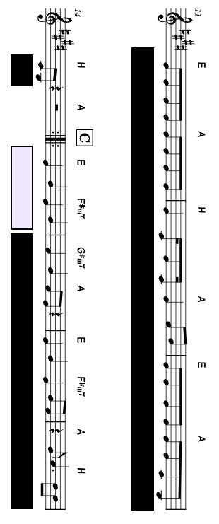
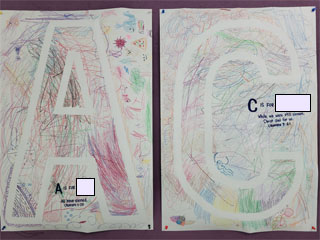
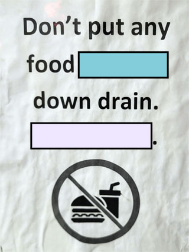

No result found for your search
- Answers should begin with a 1-5 digit question number followed by a space and then your actual answer to the question.
- Answers are case-insensitive and will only ever use letters, numbers, spaces, colons and hyphens. No other punctuation will be accepted.
- When you submit a correct answer, you will see a new question or clue.
- An answer is always incorrect if matched with a non-existent or incorrect question number.
- The question numbers you receive will not be in order.
- Finding the correct question number is usually a part of the puzzle.
- Correct answers need to be specific. There is some room for error (e.g. extra spaces are generally ignored) but not much.
- If you're sure an answer is correct but it isn't working, double check everything. Worst case, you can ask Eric.
- Some questions may have more than one correct answer. Different correct answers will give different results.
- All answers can be found in the church or using materials in the church. Don't search online.
- There are no clues in the New Basement (where the Faith Explorers are), Fellowship Hall, Kitchen, Office, or any washrooms.
- Remember that most of our lessons have been in the book of Matthew.
- If you get stuck, you could switch to a different section and come back to it later.
Help
777
When you don't know the questionBut you still need to guess
This most common answer
Is often the best.
Question and answer
Both describe this ancient form
Counting carefully
Every Last Digit
And every last word, including this.🔑 185 (Amazing...)
Room Number?
SEARCHINWARD
REACH
OUTWARD
▮▮▮▮
▮▮▮▮▮▮▮▮▮▮
Find the Chapter
What does Jesus tell us NOT to do, describing how God feeds "the birds of the air" (verse 26) as an example?Room Number?
Multiplied by 12
What did Jesus do to 5000 people?Red Fish, Left Fish, Yellow Fish
What are they looking at? In what town was Jesus born?
On what day do we celebrate it?

Between orange and purple
In a sea of green-blue
Three words spell the purpose
Of all that we do.
If you can come find us
Then through us you'll find
Infinite worlds
And wisdom enshrined.
You may find us elsewhere
Like the Bible you hold
Of which we are this many
In the New and the Old.
Found in Acts, chapter...
We read about how the Apostles were persecuted. Persecution is when you are mistreated because of what you ▮▮▮▮▮▮▮.♫ It Is Well With My Soul ♫
Lift up your voicesTogether we'll sing
The first word from each Of the following:
168 - 427 - 178 - 93 - 134 - 478 - 303
🔑 105 (Christians...)
At what notable event did Jesus wash the disciples' feet?How many inches equal that many feet?
How many months (min and max)?
Where are we?After fasting for this many days and this many nights...
What does Jesus have to overcome in Matthew 4? Count As High As You Can
What was the official reason why Joseph and Mary went to Bethlehem? Immersed among pagesIn study or prayer
Remember the wisdom
Of this verse that I share:

333
What are some possible spiritual gifts that people have? Answer separately until you find the 3 separate parts of the next clue.(1/3) For all have sinned and fall short of the glory of God.
(2/3) For it is by grace you have been saved, through ▮▮▮▮▮...
(3/3) Love the Lord your God with all your ▮▮▮▮▮...
In the greatest hiding placeA pampered child stares.
His mother held this number
Of the raiment that he wears.
🔑 342 (It is...)
How many windows?
What is the last line?
Wi5e and F001ish Bui1ders
On what do you need to build your life in order for it to be strong and secure? Examples from Lukas' lesson include God's Word and your community. (Hint: F▮▮▮ F▮▮▮▮▮▮▮▮▮)"When do we do crafts?"
It's 11:15 in the Cubbies room. What's on the schedule? In the story from our last lesson before Grand Prix, where did Peter have to stay (temporarily)?How many soldiers were there? (Verse 4) I play on most Sundays
If you lend me a hand
And I'm always in tune
Though I may not be grand.
I have nothing to lock
Though I hold many keys.
If you know who I am
Say my name if you please!
"Kill all the boys this old and younger..."
When Jesus was born, King Herod wanted to kill him. Where did God send Joseph, Mary and Jesus to escape the danger?Green Fish, Blue Fish, Black Fish
What are they looking at?
Found in Matthew, chapter...
Who else walked on water, other than Jesus?Found in Matthew, chapter...
Who else walked on water, other than Jesus?Number of times Jesus is mentioned?
 Lotus, bridge, two open skies,Angel, falls, and butterfly,
Plus one more posted on the green,
With "Blessed are" beneath each scene.
What is the one more?
How many legs does it have?
🔑 279 (Yesterday...)
What day does it start?
Where will we play?Who demonstrated amazing faith when he asked Jesus to heal his paralyzed servant?
What number is related to his title?
💡 The Value of This Background 💡
Found in John, chapter...
Jesus is our king, but he did not become human to be treated as a king. As one example, he washed the disciples' feet.More generally, what did Jesus come to do that we as Christians should also be doing, in order to show others love like Jesus?
♪ 𝅘𝅥𝅯
You beat me up, but I don't bleed.I'll hold the time for those in need.
You kick me down to make me shout! What is my name? I'm crashing out...
So Many Gifts
What gifts did the Magi give to Jesus? (Answer separately!)(1/3) John 21:11
(2/3) 1 Thessalonians 5:16
(3/3) Luke 20:30
Two Hundred and Four
Two Hundred and Four
Incorrect. Go back and do the math.
(╯°□°)╯︵ ┻━┻Find the reference (book, chapter and verse).
♫ Amazing Grace ♫
The music is playingThe rhythm is strong
Take from the beginning One word from each song:
164 - 203 - 498 - 342 - 407 - 483 - 494
♫ Amazing Grace ♫
The music is playingThe rhythm is strong
Take from the beginning One word from each song:
164 - 203 - 498 - 342 - 407 - 483 - 494
♫ Amazing Grace ♫
The music is playingThe rhythm is strong
Take from the beginning One word from each song:
164 - 203 - 498 - 342 - 407 - 483 - 494
🔑 70 (Jesus...)
🔑 70 (Jesus...)
Count again. A pew is not a row.121
We point the way beneath your feetLike painted signs upon a street.
We're 2 on blue and 4 on white
And 3 between the upper flights.
What is our colour and our shape?
If you don't know, just check the tape!
WHO WAS THE
▮▮▮▮▮▮▮▮
▮▮ ▮▮▮▮'▮
▮▮▮▮▮?
▮▮▮▮ McLeod Road
(Similar to A PSALM FOR DAVID)SINCERELY REVEAL CHRIST'S
LOVE ▮▮▮▮▮▮▮▮▮ PROCLAIM
THE SAVIOR'S GRACE
▮▮▮ ▮▮▮ ▮▮▮
MURDERER
▮▮ ▮▮▮▮'▮
▮▮▮▮▮?
Not all fish were on the walls.
143

▮▮▮ ▮▮▮ ▮▮▮
▮▮▮▮▮▮▮▮
ON ERIC'S
▮▮▮▮▮?
12345
Unscramble the keys you've collected: